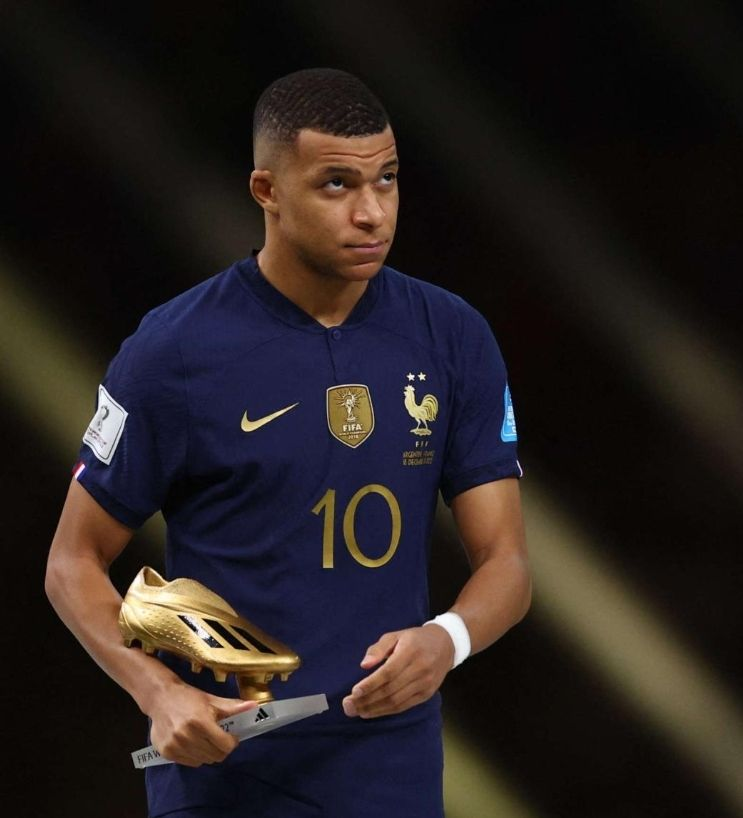
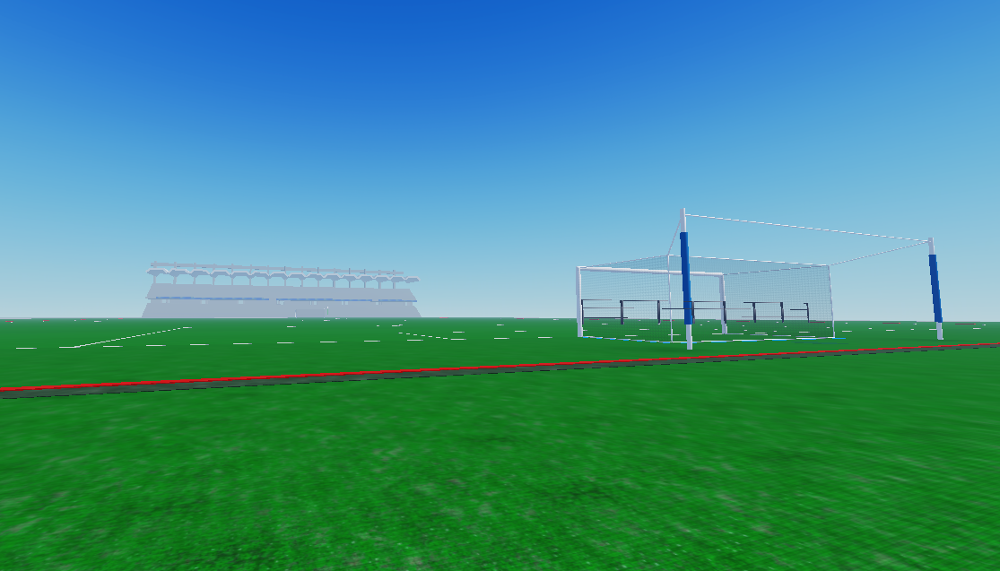
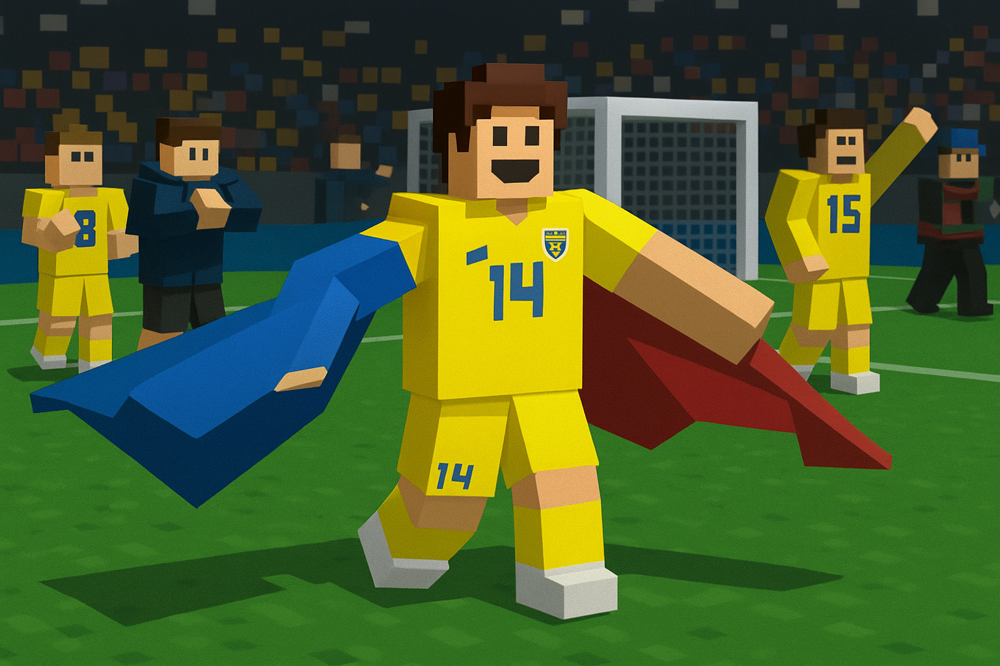

FRANȚA A FOST DESFIINȚATĂ
4 Iulie 2025
Într-un anunț care a surprins comunitatea RL1, echipa Franța a fost oficial desființată din Euro 2025.
Citește mai mult

Lucrările au început… dar va fi gata la timp pentru marele turneu?
4 Iulie 2025
București, 4 iulie 2025 — Într-o decizie fără precedent, organizatorii Euro 2025 RL 1 România au decis să facă un lucru extraordinar și aproape imposibil într-un interval de timp atât de scurt.
Citește mai mult
Muntenegru RL1 se pregătește de EURO
3 Iulie 2025
Naționala Muntenegrului din RL1 se pregătește intens pentru EURO. Nu avem fani mulți, dar avem o echipă unită, serioasă și prezentă la fiecare antrenament.
Citește mai mult
Spania vine la EURO cu un lot echilibrat și plin de superstaruri: Apex și Zindy conduc ofensiva!
2 Iulie 2025
Naționala Spaniei se pregătește intens pentru Campionatul European, iar așteptările sunt uriașe.
Citește mai mult

Muntenegru bate Franța în amical 7-1
1 Iulie 2025
Într-un meci amical surprinzător, Muntenegru a învins Franța cu scorul zdrobitor de 7-1.
Citește mai mult

România în Grupa A alături de Germania! Cine vor fi următoarele două echipe?
27 iunie 2025
Grupa A începe cu emoții mari pentru suporterii tricolori!
Citește mai mult